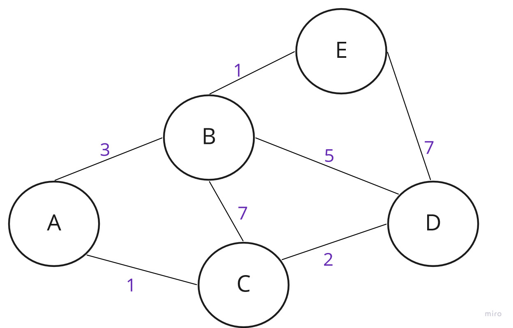
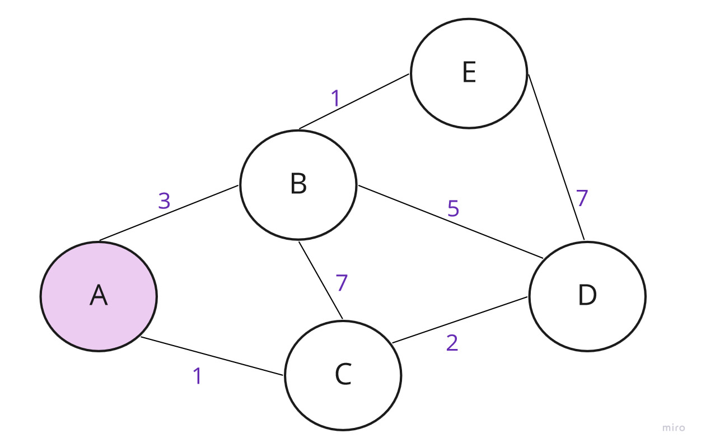
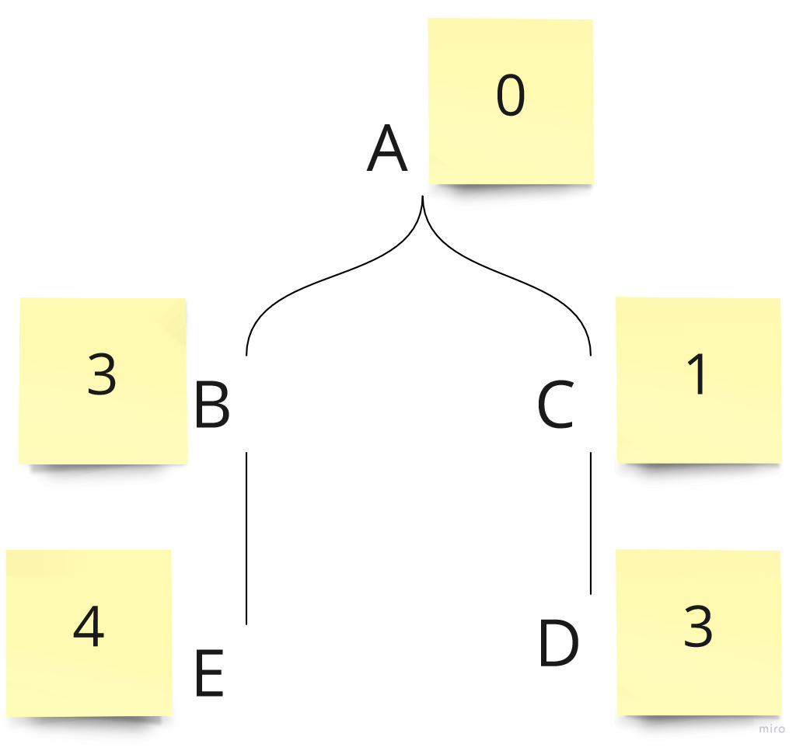
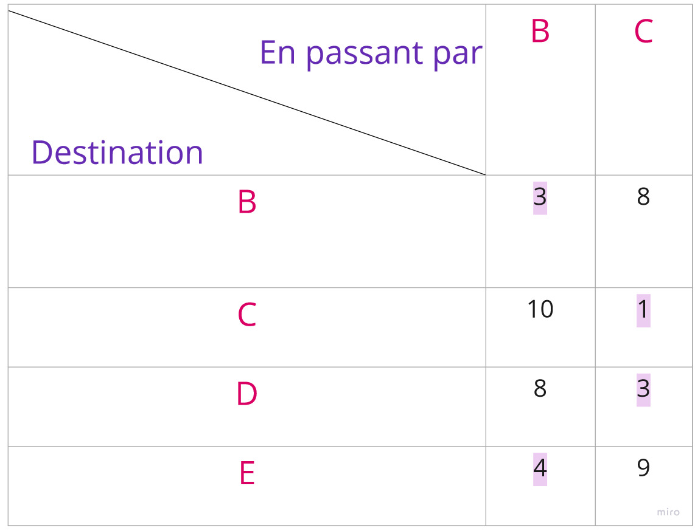

OSPF
Open Shortest Path First
Ce que c'est
- L’OSPF est un protocole à état de lien.
- Tous les routeurs connaissent la topologie complète du réseau.
- Tous les routeurs transmettents les mises à jour aux autres routeurs.
- Il permet de définir le meilleur chemin en ayant connaissance de la topologie complète.
La première étape consiste à réunir toutes les informations topologiques.
Pour cela, chaque routeur génère ses informations topologiques (« à quels réseaux suis-je raccordé »)
et ces informations sont diffusées vers les autres noeuds du réseau OSPF.
Les LSAs sont ces informations topologiques.
- Paquet Hello - Etablit et maintient les relations d'adjacence avec ses voisins.
- Paquet DBD (Database Description) - Décrit le contenu de la base de données link-state d'un routeur.
- Paquet LSR (Link-State Request) - Requête pour obtenir des informations spécifiques sur la base de données link-state d'un routeur voisin.
- Paquet LSU (Link-State Update) - Utilisé pour répondre aux paquets LSRs et mettre à jour.
- Paquet LSAck (Link-State Acknowledgment) - Accuse réception des LSA des voisins.
Comment
Chaque routeur utilise ensuite un algorithme du plus court chemin pour déterminer la route la plus rapide vers chacun des réseaux connus dans la LSDB.
Une représentation pratique est celle d'un graphe valué dans lequel chaque noeud représente un routeur. La valeur indiquée sur chaque lien correspond à son coût basée sur la vitesse de la connexion réseau. Plus il est faible, meilleur est le lien.


Table de routage pour le noeud A
On reitère cet algorithme sur chacun des noeuds.